무선설비산업기사 (2004-09-05 기출문제)
1과목: 디지털 전자회로
1. D 플립-플롭을 이용하여 그림과 같은 회로를 구성하고, 클럭(clk)단자에 5[kHz] 클럭펄스를 인가하였다. 동작시작단계에서 Q 출력을 +5[V]로 하였다면 출력은 ?
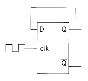
- 10[kHz]
- 2.5[kHz]
- 5[kHz]
- 5[V] DC
(정답률: 알수없음)

2. 다음 논리식을 간단히 하면 ?
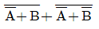
- A
- B
- A+B
- AㆍB
(정답률: 알수없음)
3. 다음 논리계열 중 스위칭 속도가 제일 빠른 것은 ?
- TTL
- CMOS
- ECL
- Schottky TTL
(정답률: 47%)
4. PNP 접합 TR 증폭회로에서 콜렉터의 전위는 베이스 전위를 기준으로 했을 때 어떤 전위를 걸어 주어야 하는가?
- 정 전위
- 부 전위
- 같은 전위
- 0 전위
(정답률: 알수없음)
5. 전자계산기의 주기억장치에서 전하의 누설에 대비하여 주기적으로 회생(refresh)시켜 주어야 하는 것은?
- Mask ROM
- EPROM
- Static RAM
- Dynamic RAM
(정답률: 알수없음)
6. 신호파의 최고주파수가 4[kHz] 일 때 PCM 변조방식에서 샘플링 주파수 조건은?
- 4[kHz] 이하
- 5[kHz] 이상
- 6[kHz] 이하
- 8[kHz] 이상
(정답률: 알수없음)
7. 전원의 출력단에 가장 적합한 증폭기 회로의 형태는?
- 공통 에미터(C-E)증폭기
- 캐스코드(Cascode)증폭기
- 공통 베이스(C-B)증폭기
- 공통 컬렉터(C-C)증폭기
(정답률: 28%)
8. 연산증폭기에 대한 설명이다. 틀린 것은 ?
- 고이득 차동 증폭기가 주축을 이룬다.
- IC화된 연산 증폭기는 고신뢰도, 고안정도, 회로의 소형화 등 장점이 있다.
- 이상적 연산증폭기인 경우 입력저항은 zero, 출력저항은 ∞ 를 갖는다.
- 가상접지는 물리적인 구성을 표시하는 것이 아니고, 전압증폭도를 구하는데 유용하다.
(정답률: 알수없음)
9. 다음 회로에서 S=1, R=0 이 인가되었을 때 Q와
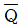
의 출력상태는?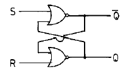
- Q=0,
 =1
=1 - Q=1,
 =1
=1 - Q=0,
 =0
=0 - Q=1,
 =0
=0
(정답률: 알수없음)
10. J - K 플립플롭에서 Jn = 0, Kn = 1일 때 클록펄스가 1 상태라면 Qn+1의 출력상태는 ?
- 부정
- 0
- 1
- 반전
(정답률: 알수없음)
11. 다음과 같은 RC회로에 직류 기전력을 가했을 때 해당되지 않는 그림은 ?
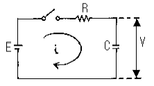
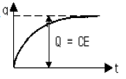
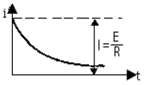
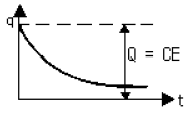
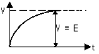
(정답률: 알수없음)
12. 다음 정류회로에 출력전류가 흐르지 않는 범위는 ? (단, Vi = Vm cos ω t이다.)
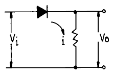
- 0＜ωt＜π
- π/2＜ωt＜3π/2
- 0＜ωt＜π/2
- π/2＜ωt＜2π
(정답률: 알수없음)
13. 2-out of-5 code에 해당되지 않는 것은 ?
- 10010
- 11000
- 10001
- 11001
(정답률: 50%)
14. 무변조때의 출력이 1[㎾]인 무선전화 송신기를 80[%] 변조하면 출력은 몇[㎾]가 되는가 ?
- 0.64[㎾]
- 1.32[㎾]
- 1.80[㎾]
- 2.84[㎾]
(정답률: 알수없음)
15. 8진수 67을 16진수로 바르게 표기한 것은 ?
- 43H
- 37H
- 55H
- 34H
(정답률: 알수없음)
16. 중심 주파수가 455[㎑]이고, 대역폭이 10[㎑]가 되는 단동조회로를 만들려면 이 회로 부하의 Q는 얼마로 하여야 하는가 ?
- 42.3
- 45.5
- 52.3
- 55.4
(정답률: 알수없음)
17. 에미터 접지일 때 전류증폭율이 각각 hFE1, hFE2인 두개의 트랜지스터 Q1과 Q2를 그림과 같이 접속하였을 때의 콜렉터 전류 Ic의 크기는?
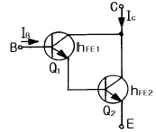
- hFE1· hFE2· IB
- (hFE1 / hFE2)· IB
- hFE2(hFE1+1)· IB
- hFE1· IB + hFE2(hFE1+1)· IB
(정답률: 60%)
18. 다음 궤환증폭기의 특성에 관한 설명 중 틀리는 것은 ?
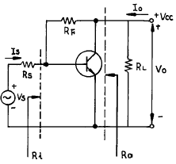
- 궤환으로 입력 임피이던스 Ri는 감소한다.
- 궤환으로 출력 임피이던스 Ro는 감소한다.
- 궤환으로 전류이득 Io/Is는 감소한다.
- RF가 작을수록 출력전압 Vo는 커진다.
(정답률: 알수없음)
19. 회로에서 Barkhausen의 발진조건이 만족되는 조건은 ?
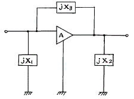
- X1＜ 0, X2＞0, X3＞0
- X1＜ 0, X2＜ 0, X3＜0
- X1＞ 0, X2＜ 0, X3＞0
- X1＜ 0, X2＜ 0, X3＞0
(정답률: 알수없음)
20. 다음 그림의 회로는 무슨 회로인가 ?
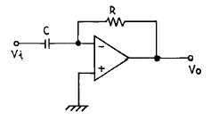
- 미분기
- 적분기
- 가산기
- 증폭기
(정답률: 알수없음)
2과목: 무선통신 기기
21. FM 변조 방식 중 직접 FM 변조 방식인 것은?
- 세라소이드 변조를 이용한 변조 방법
- 가변용량 다이오드를 이용하는 변조 방법
- 이상법에 의한 변조 방법
- 벡터 합성법에 의한 변조 방법
(정답률: 알수없음)
22. 각 10[m]씩 떨어진 A,B,C 3개소 접지판의 접지저항을 측정하기 위하여 콜라우시 브리지로 측정하였더니 A-B간 저항은 10[Ω],B-C간의 저항은 16[Ω],C-A간의 저항은 6[Ω] 이었다면 B의 접지저항은 얼마인가?
- 15[Ω]
- 10[Ω]
- 5[Ω]
- 1[Ω]
(정답률: 알수없음)
23. SSB통신 방식을 DSB통신 방식과 비교할 때 틀린 것은?
- 통신 비밀이 상당히 보장된다.
- S/N 비가 양호하다.
- 동일 통신 내용을 전송할 때는 점유 주파수대가 반감 된다.
- 선택성 페이딩에 의한 일그러짐이 증대된다.
(정답률: 알수없음)
24. 정류기에서 맥동성분을 제거하고 직류성분만을 얻기 위해 사용하는 회로는?
- 배전압 정류회로
- RL 필터 회로
- 축전지 회로
- 평활 회로
(정답률: 알수없음)
25. 위성 중계기의 구성 중 신호 증폭부에 사용되는 광대역 증폭기는?
- MAGNE TRON
- TWTA
- TDA
- KLYSTRON
(정답률: 알수없음)
26. 무부하시 직류 출력 전압이 10[V], 다이오드의 순방향 저항 rf가 10[Ω]인 반파 정류기에서 부하 전류의 규격값을 100[㎃]로 하고자 한다. 부하 저항의 값은 얼마로 하여야 좋은가 ?
- 50[Ω]
- 70[Ω]
- 90[Ω]
- 110[Ω]
(정답률: 알수없음)
27. 다음 중 급전선 등 전송선로의 정합상태의 양부를 나타내는 것은?
- 정재파비
- 임피던스 정합
- 스미드 도표
- 특성 임피던스
(정답률: 70%)
28. 다음 중 AM 송신기의 구성요소로서 맞지 않는 것은?
- 발진회로
- 변조회로
- 복조회로
- 증폭회로
(정답률: 알수없음)
29. FM 수신기 복조기에서 Foster-Seely형과 Ratio- Detector형의 검파감도 비는?
- 1 : 1
- 2 : 1
- 1 : 2
- 4 : 1
(정답률: 알수없음)
30. 어느 수신기의 입력에 20㎶의 전압을 가했더니 출력 전압이 20V이었다.이 때 이 수신기의 감도는 몇 dB인가?
- 60 dB
- 80 dB
- 100 dB
- 120 dB
(정답률: 73%)
31. M/W중계방식 중 장해물 정상에 송·수신 안테나를 설치하거나 반사판을 설치하여 전파를 목적하는 방향으로 유도하는 방식은 ?
- 검파중계방식
- 헤테로다인중계방식
- 무급전중계방식
- 직접중계방식
(정답률: 알수없음)
32. AM수신기 및 FM수신기에서 다같이 사용되고 있는 것은?
- 리미터를 사용해서 일정진폭의 신호를 검파기에 보낸다.
- 검파기로서 주파수 변별기를 사용한다.
- 스켈치(squelch)회로를 사용하고 있다.
- 주파수 변환을 위하여 국부 발진을 시키고 있다.
(정답률: 알수없음)
33. 위성의 다원접속기술에서 회선할당방식에 속하지 않는 것은?
- 사전할당방식
- 요구할당방식
- 개방할당방식
- 임의할당방식
(정답률: 알수없음)
34. 기본파 진폭이 20[V], 제 2, 제 3고조파의 진폭이 각각 2[V], 1 [V] 되는 고주파 전압의 왜율은 얼마인가 ?
- 약 8[%]
- 약 11[%]
- 약 14[%]
- 약 17[%]
(정답률: 알수없음)
35. 마이크로 웨이브파의 파장 측정에 적합한 것은 ?
- 공동 파장계
- 볼로메터
- Sweep Generator
- x - y레코드
(정답률: 알수없음)
36. 다음 중 점유 주파수대에 대한 설명으로 가장 타당한 것은?
- 반송파에서 상측파대의 상한 주파수까지
- 반송파에서 하측파대의 하한 주파수까지
- 하측파대의 상한 주파수에서 상측파대의 하한 주파수까지
- 하측파대의 하한 주파수에서 상측파대의 상한 주파수까지
(정답률: 47%)
37. 정지위성에 장착하는 안테나가 갖추어야 할 조건과 관계가 먼 것은?
- 고이득일 것
- 저잡음일 것
- G/T가 작을 것
- 광대역성일 것
(정답률: 알수없음)
38. FM 수신기에서 수신입력 레벨을 감소 시켜가면 어떤 값에서 출력의 S/N이 급격히 감소하는 현상이 나타난다. 이때의 수신레벨을 무엇이라고 하는가?
- 한계레벨(threshold level)
- 피크레벨(peak level)
- 신호레벨(signal level)
- 잡음레벨(noise level)
(정답률: 알수없음)
39. FM수신기에서 입력신호가 없을 때 잡음이 대단히 크며 이를 방지하기 위해 저주파 증폭부를 자동적으로 정지시키도록 동작을 하는 회로는?
- 스켈치 회로
- AFC 회로
- IDC 회로
- 리미터 회로
(정답률: 알수없음)
40. 무선송신기에 수정진동자를 사용하는 이유로 가장 타당한 것은?
- 일그러짐이 적은 파형을 얻기 위해서이다
- 발진주파수를 쉽게 변동할수 있기 때문이다.
- 발진주파수가 안정하기 때문이다.
- 고조파를 쉽게 얻을수 있기 때문이다.
(정답률: 알수없음)
3과목: 안테나 개론
41. 제 3과목: 안테나개론 출력 100[㎾] 로써 방송되고 있는 라디오파가 안테나로부터 20[㎞]떨어진 장소에서의 전계강도는 얼마인가 ? (단, 1[㎞] 떨어진 곳에서는 1.73[V/m] 이다.)
- 0.086[V/m]
- 1.73[V/m]
- 5.47[V/m]
- 54.7[V/m]
(정답률: 알수없음)
42. 다음은 디스콘(discone) 안테나에 대한 설명이다. 옳지 않는 것은?
- 원판과 원추로 구성되어 있다.
- 주로 VHF와 UHF대의 일반 통신용이다.
- 급전점 임피던스는 약 50[Ω]이다.
- 수평면내 지향특성은 8자형이다.
(정답률: 알수없음)
43. 비유전율이 2.56, 비투자율이 1인 유전체의 고유 임피던스[Ω]는?
- 60
- 118
- 235
- 470
(정답률: 알수없음)
44. 지상고가 같을 때 역L형 안테나가 수직안테나 보다 실효고가 크다. 그 이유는?
- 도체저항이 적기 때문이다.
- 접지저항이 적기 때문이다.
- 수평도체의 역할 때문이다.
- 지향성이 예리하기 때문이다.
(정답률: 알수없음)
45. 다음 중 부 반사기로 볼록 타원체를 사용하고 있으며 위성통신 지구국용 고이득 저잡음 안테나는 ?
- 패스렝스(path length) 안테나
- 카세레그린(cassegrain) 안테나
- 대수주기(log periodic) 안테나
- 슬롯(slot) 안테나
(정답률: 알수없음)
46. λ /4 수직접지 안테나의 복사저항은? (단, ℓ : 안테나의 실효고)
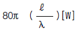
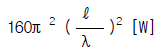
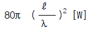
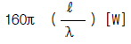
(정답률: 알수없음)
47. 단방향 지향성 안테나가 아닌 것은 ?
- 엔드파이어 헤리컬 안테나(Endfire Helical Antenna)
- 파라보라 안테나(Parabola Antenna)
- 코너 리플렉터 안테나(Corner reflector Antenna)
- 루프 안테나(Loop Antenna)
(정답률: 알수없음)
48. 동축 cable의 특성 임피던스는 ? (단, D : 외부 도체의 직경, d : 내부 도체의 직경)
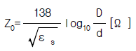
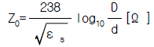
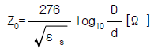
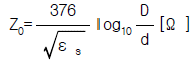
(정답률: 알수없음)
49. 태양에서 발생하는 자외선의 돌발적 증가로 인하여 발생되는 전파방해는 ?
- 에코우(echo)
- 록셈부르코 효과(luxemburg effect)
- 델린저 현상(dellinger effect)
- 자기람(magnetic storm)
(정답률: 알수없음)
50. 수퍼게인(super gain)안테나를 TV송신용으로 사용하려고 할 때 고려하여야할 사항으로 맞지 않는 것은 ?
- 직렬공진과 병렬공진을 조합하여 합성리액턴스 성분을 크게하여 광대역 특성을 갖게 한다.
- 안테나의 Q를 낮게 하여 광대역성으로 한다.
- 광대역으로 하기 위하여 안테나 소자의 직경을 크게 한다.
- 트랩회로를 설치하여 광대역성으로 한다.
(정답률: 알수없음)
51. 접지 안테나의 기저부에 정전용량 C를 직렬로 삽입할 경우 맞는 설명은?
- 공진주파수는 증가되고, 안테나 길이는 단축된 것으로 된다.
- 공진주파수는 증가되고, 안테나 길이는 연장된 것으로 된다.
- 공진주파수는 감소되고, 안테나 길이는 단축된 것으로 된다.
- 공진주파수는 감소되고, 안테나 길이는 연장된 것으로 된다.
(정답률: 알수없음)
52. 다음은 초단파의 전파 특성을 설명한 것이다. 틀린 것은?
- 주파수가 높기 때문에 지표파는 감쇠가 없다.
- 직접파와 대지 반사파에 의해서 수신 전계가 대략 정해진다.
- 지상에서 직접파는 기하학적인 가시거리보다 약간 멀리 전달된다.
- 태양의 활동에 따르는 수신 강도의 변화는 단파보다 영향이 적다.
(정답률: 알수없음)
53. 다음은 MUF(Maximum Usable Frequency)의 설명이다. 옳지 못한 것은 ?
- 주간에는 높고, 야간에는 낮다.
- 계절의 영향을 받지 않는다.
- 태양 흑점수에 의해 변화한다.
- MUF는 전파예보곡선으로 부터 구할수 있다.
(정답률: 알수없음)
54. 루우프 안테나와 수직 안테나를 조합하면 수평면내 지향성은 어떻게 되는가?
- 전방향성이 된다.
- 단일 지향성이 된다.
- 8자 지향성이 된다.
- 무지향성이 된다.
(정답률: 알수없음)
55. 복사 저항 300[Ω]인 두개의 안테나를 λ /4 임피던스 변환기를 사용하여 300[Ω]의 평행 2선식 급전선에 정합시키고자 할 때 변환기의 임피던스는 얼마이어야 하는가 ?
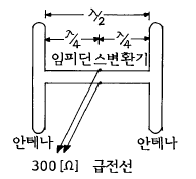
- 212[Ω]
- 300[Ω]
- 313[Ω]
- 424[Ω]
(정답률: 알수없음)
56. 동조 급전선의 설명 중 잘못된 것은 ?
- 정재파에 의한 급전이므로 정합회로가 불필요하다.
- 송신기와 안테나의 거리가 가까울 경우 사용한다.
- 전송효율이 높으므로 장거리 전송에도 적당하며 손실이 적다.
- 급전선 양쪽에서 정재파가 동진폭 역위상이 되어야 하므로 평형형 급전선만이 사용된다.
(정답률: 알수없음)
57. 안테나에서 발사된 수직편파가 지구자계의 영향을 받는 전리층에서 반사되면 어떠한 편파가 되는가 ?
- 수직편파
- 타원편파
- 원편파
- 수평편파
(정답률: 알수없음)
58. 대지의 융기부나 기타 지상에 있는 전파 장애물을 지나 수신점까지 도달하는 전파는 ?
- 지표파
- 회절파
- 대류권 산란파
- 직접파
(정답률: 알수없음)
59. 급전선에서 정재파비가 1인 경우는 ?
- 반사계수의 값이 1인 경우
- 급전선의 고유 임피던스가 75[Ω]인 경우
- 급전선이 고유 임피던스로 종단되어 있을 경우
- 급전선의 표피효과를 무시할 수 있을 경우
(정답률: 알수없음)
60. 반파장 다이폴 안테나의 복사 저항은 ?
- 36.6 [Ω]
- 73.13 [Ω]
- 293 [Ω]
- 300 [Ω]
(정답률: 알수없음)
4과목: 전자계산기 일반 및 무선설비기준
61. 다수의 인터럽트 요청이 있는 경우, 특정한 인터럽트 요구에 대해서만 인터럽트가 금지되도록 사용하는 것은?
- 인터럽트 인에이블(interrupt enable)
- 벡터 테이블(vector table)
- 인터럽트 마스크(interrupt mask)
- 우선순위(priority)
(정답률: 알수없음)
62. 마이크로 컴퓨터에서 널리 채택되어 있는 코드로서 특히 데이터 통신용으로 많이 쓰이고 있는 것은 ?
- ASCII
- UNICODE
- HAMMING CODE
- GRAY CODE
(정답률: 알수없음)
63. 우주국 재허가의 신청은 허가의 유효기간 만료전 어느 시점에 하여야 하는가?
- 1월 이상 3월 이내
- 2월 이상 4월 이내
- 1월 이상 5월 이내
- 3월 이상 52월 이내
(정답률: 알수없음)
64. 다음 설명 중 틀린 것은?
- 기계어는 컴퓨터가 직접 해석하고, 명령을 실행할 수 있는 언어이다.
- 어셈블리 언어는 기계어에 대응하는 의사 기호를 사용하여 기술한 기호 언어이다.
- C언어는 유닉스용으로 개발한 언어로서 객체지향적인 프로그래밍 언어이다.
- PL/I는 복잡한 데이터를 쉽게 처리할 수 있으나, 리스트 처리가 불가능하다.
(정답률: 알수없음)
65. 논리회로에서의 인버터(inverter)와 같이 복잡한 논리연산을 위한 연산자로 이용되며 음수의 표현에 필요한 연산기는 ?
- MOVE
- Complement
- AND 연산
- OR 연산
(정답률: 알수없음)
66. 일반적인 컴퓨터 구조에서 CPU에 포함되지 않는 것은 ?
- 제어장치
- 레지스터
- 보조기억장치
- 논리연산장치
(정답률: 37%)
67. 다음은 인증번호 부여 방법의 예를 나타낸 것이다. 틀린 것은?
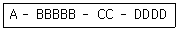
- A : 인증의 종류
- BBBBB : 기기부호
- CC : 인증연도
- DDDD : 측정번호
(정답률: 알수없음)
68. 유도식통신설비 및 전력선반송설비에서 발사되는 고조파·저조파 또는 기생발사강도는 기본파에 대하여 몇 ㏈ 이하이어야 하는가?
- 10 ㏈
- 20 ㏈
- 30 ㏈
- 40 ㏈
(정답률: 알수없음)
69. 다음 중 명령어가 해독되는 장치는?
- main storage
- ALU
- control unit
- instruction counter
(정답률: 알수없음)
70. 인터럽트 발생시 되돌아 올 주소(Return Address)를 기억시키기 위하여 사용되는 것은?
- Program Counter
- Accumulator
- Data Segment
- Stack
(정답률: 알수없음)
71. 무선국의 주파수지정을 변경함으로서 발생하는 손실을 보상해야 한다. 다음중 예외의 경우가 아닌 것은?
- 시설자의 요청에 의한 경우
- 정보통신부장관의 요청에 의한 경우
- 국제전기통신연합에 의하여 주파수 국제분배가 변경 된 경우
- 주파수의 용도가 제2순위 업무인 주파수를 사용하는 경우
(정답률: 알수없음)
72. 16진수 73C.4E 를 10진수로 변환하면 다음 중 어느 값이 근사치인가 ?
- 185.23
- 1852.3⑤
- 18523.⑤
- 123.25
(정답률: 알수없음)
73. 수신설비로부터 부차적으로 발사되는 전파의 세기는 수신 공중선과 전기적 상수가 같은 의사공중선회로를 사용하여 측정한 경우에 얼마 이하이어야 하는가?
- -54데시벨밀리와트(dBmW)이하
- +54데시벨밀리와트(dBmW)이하
- -74데시벨밀리와트(dBmW)이하
- +74데시벨밀리와트(dBmW)이하
(정답률: 알수없음)
74. 중앙처리장치로부터 발생되는 기억장치 읽기 신호와 쓰기 신호를 이용하여 입출력장치에 대한 읽기와 쓰기를 수행할 수 있는 방식은?
- Interrupt I/O
- Isolated I/O
- Programmed I/O
- Memory Mapped I/O
(정답률: 알수없음)
75. 정보를 기억장치에 기억시키거나 읽어내는 명령이 있고난 후부터 실제로 데이터가 기억되거나 또는 읽기가 시작되는데 소요되는 시간은?
- Access time
- Cycle time
- Search time
- Seek time
(정답률: 알수없음)
76. 발사에 의하여 점유하는 주파수대의 중심주파수와 지정주파수 사이에 허용될 수 있는 최대편차를 백만분율 또는 ㎐로 표시하는 것은?
- 점유주파수대폭
- 주파수허용편차
- 할당주파수
- 특성주파수
(정답률: 알수없음)
77. 다음 용어의 정의 중 무선국에서 사용하는 주파수마다의 중심주파수를 말하는 것은?
- 지정주파수
- 기준주파수
- 특성주파수
- 할당주파수
(정답률: 알수없음)
78. 전파형식의 표시에서 진폭변조중 단측파대에서 저감 또는 가변레벨반송파에 해당되는 기호는 어느 것인가 ?
- R
- J
- H
- A
(정답률: 34%)
79. 송신설비의 공중선·급전선 등 고압전기를 통하는 장치는 사람이 보행하거나 기거하는 평면으로부터 몇 미터 이상의 높이에 설치하여야 하는가?
- 2 m
- 2.5 m
- 3 m
- 3.5 m
(정답률: 알수없음)
80. 10.5㎓∼40㎓ 주파수대의 송신설비에서 발사되는 전파의 주파수 허용편차가 다른 것은?
- 고정국
- 방송국
- 우주국
- 지구국
(정답률: 알수없음)